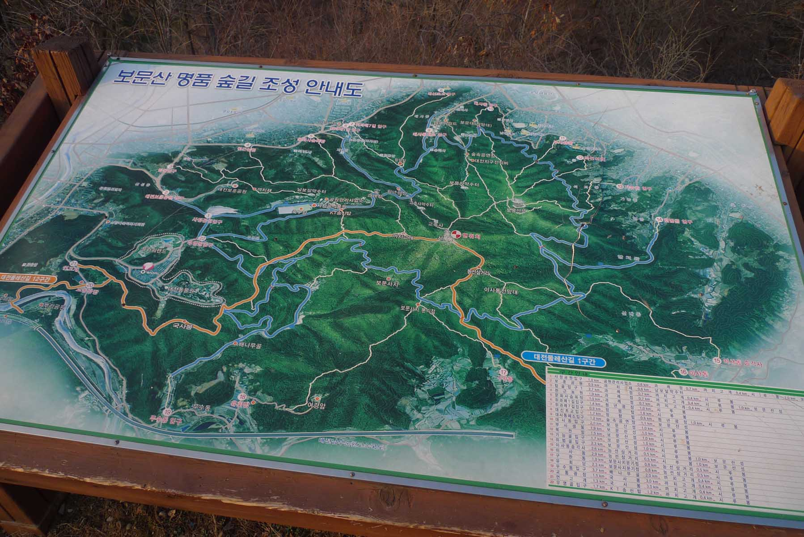
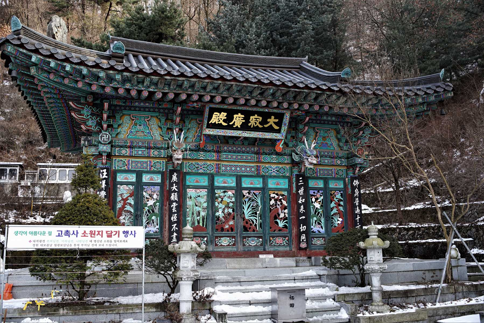
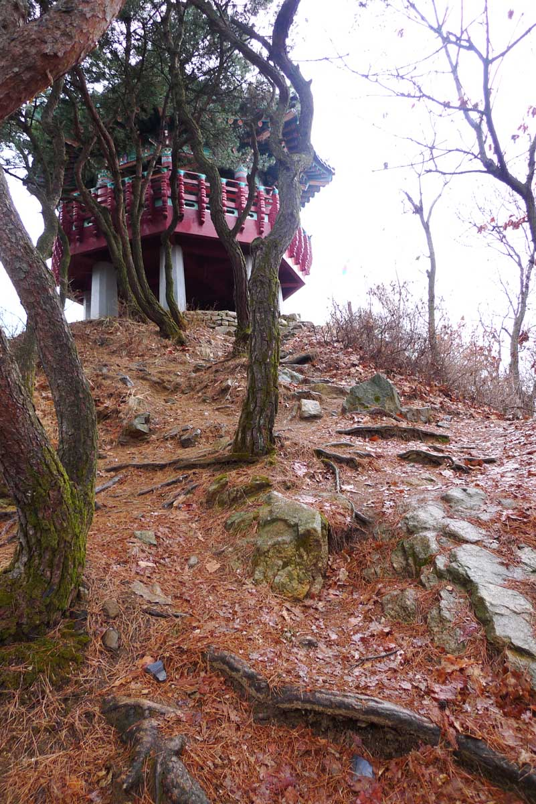
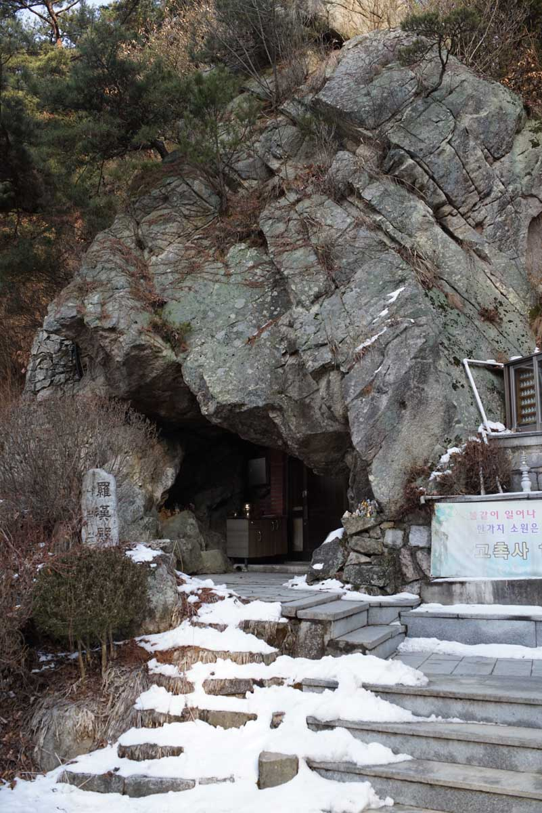
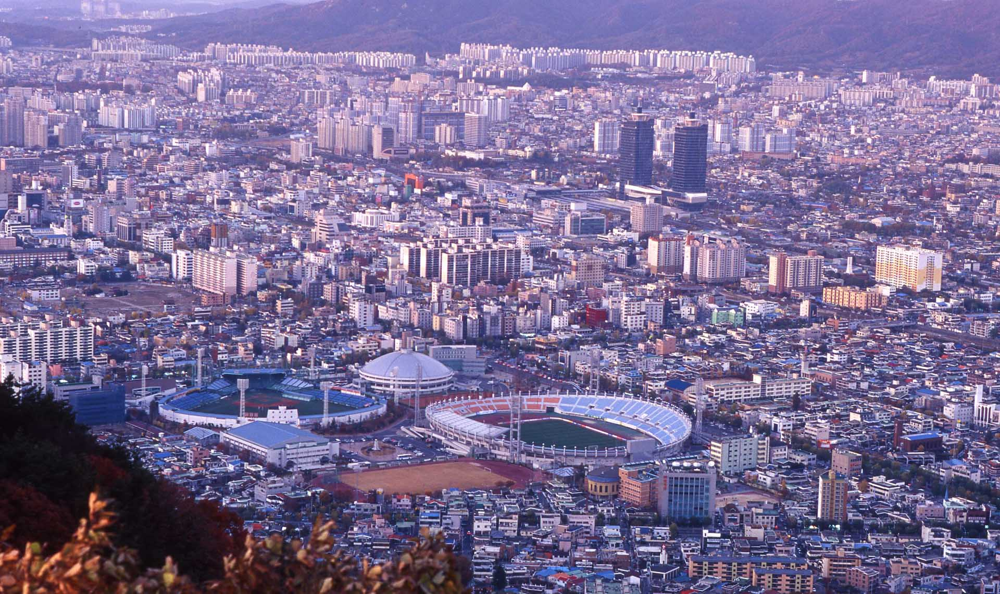

Two approaches

This mountain has numerous trails. It also has two different sides by which one can approach the
mountain. One way is near the HanBat (한밭 도서관) Library. This approach has the advantage in that one can
drive a distance up the side of the mountain and there are a number of parking lots near a small pond
where you can leave your car. The other approach is via DaeSaDong (대사동). Here there is a road part way
up the mountain where one parks along on the road curb. There are also many other approaches to the
trails and these can be found on the included maps. The photographs included in this description are
taken along trails at both entrances. As this mountain is within city limits it is also easily
accessible by a number of buses and a favorite weekend visiting place for local residents.
Directions from HanBat (한밭) Library side

From the parking area up the road from HanBat (한밭) Library entrance there are three parking lots on the
road just before the road is blocked by a gate. From here you climb up the road and pass the toilets
(화장실) on the right and a location of a dust cleaning station with air pump. From there you go to the T
intersection. You can go either right or left as this is a road that goes all the way around the summit
area. My favorite way is to go right and up a path that follows a stream through the woods. It is a less
used way to the top but affords one the solitude of the beautiful woods that cover this mountain.
Gazebo at top

The trail is obvious and it follows up the valley where from time to time one sees the remains of what
was at one time part of a local water supply system complete with tanks to store the water. This path is
on both sides of the stream crossing over a number of times before finally going up a steep trail that
leads to the saddle of the mountain. At the saddle turn right and soon you are on the main path that
leads to the ridge where you can either go to the castle area, BoMunSanSong (보문산성), or the highest peak
to the other peak, SheRuBong(시루봉), that contains a gazebo at the top. Both paths have good views of
Daejeon. It is interesting if you have time to climb both peaks and admire some of the best views of
Daejeon.
Directions for climb from Daejeon Baseball Stadium

There is a road partway up the mountain on this side. It passes a temple on the right. It is well worth
visiting and has many interesting statues. There is now a board walk way that leads to the main trails
of this beautiful mountain. Follow the board walk and it leads to trails up the mountain. There are many
signs on the way that will help with the directions. The trails lead to a ridge and there you can decide
either to follow the path to SheRuBong (시루봉) or the main peak of BoMunSanSong. (보문산성). Be sure to follow
the same trail down that you followed while climbing the mountain. It is very easy to end up on the
wrong side of the mountain.
First Sun of the New Year

This is an easy mountain to climb because it is not high or steep yet affords amazing views of the city.
It is well located in the central Daejeon area and is easy to approach by either taxi of bus. As stated
above there are many trails on this mountain and all are worth exploring. I also enjoy the views to the
South and west where many mountains stretch out over great distances. One of my favorite events is the
climb to watch the first sun of the New Year. The sunrise paralex photo above displays the majestic beauty of this event.
It is not a difficult mountain to climb and its proximity of the city makes it a particularly excellent
location to view the city and its surrounding areas. It is also a wonderful mountain to climb in the
fall as the tree colors are exceptional. Our hiking club, The Daejeon Hikers has a tradition to visit
this mountain during the fall to view the leave colors before they fall off the trees.